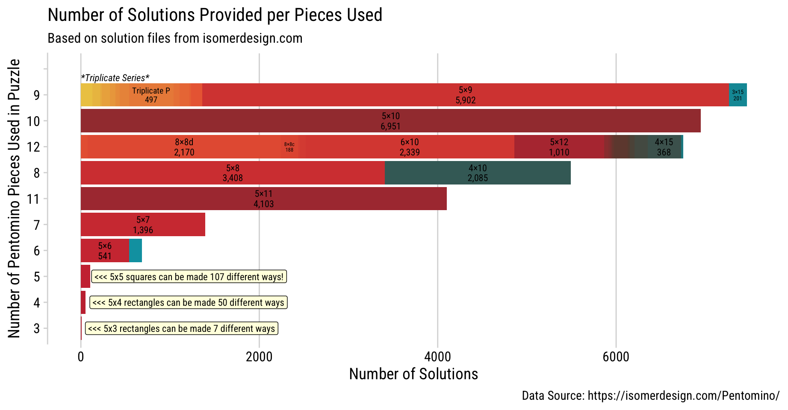

Saving the sf Object (Pentomino Solutions) for Later Use as Parquet 📦
Confession time: I only discovered Parquet files last year. 🙈 For someone who spends a good chunk of their time in the data world, it felt like a secret club I wasn’t part of. But hey, if you’re not in that club yet either, let’s join together now! 🎉
Last few days, I was working with an sf object containing solutions for my Pentomino puzzles. (Original Solution is from this amazing Pentomino Website by Isomer Design). Now, Pentomino solution isn’t “big data” by any stretch (I usually deal with much larger datasets in my business work). But even so, the file was big enough that I couldn’t just upload it to GitHub.😅
This got me thinking: what if I save the sf object as Parquet format to reduce the file size, and so I can reuse the file later on.
Why Parquet
Think of Parquet as the ultra-organized sibling to CSV. While CSV is great for simplicity, Parquet packs your data more tightly and efficiently—like Marie Kondo personally folding each column! ✨
In terms of size, my Pentomino solutions went from a hefty 105MB GeoJSON to a feather-light 695KB Parquet file. Perfect for GitHub! 🔥 (P.S. You’ll see this dataset in action shortly!)
It’s not just about saving space—though. It’s also about speed 🏎️. Parquet makes it faster to read, write, and process data, which become crusial when working with millions of rows of data.
Converting & Writing sf file to Parquet
# Load required librarieslibrary(tidyverse) # Easily Install and Load the 'Tidyverse' library(sf) # Simple Features for R library(arrow) # Integration to 'Apache' 'Arrow' # Save Pentomino solutions in different formatspento_sf |>write_rds(file ="data/pentomino_solution_sf.rds") # RDS format# To reload later: pento_sf <- read_rds("data/pentomino_solution_sf.rds")pento_sf |>write_sf("data/pentomino_solution_sf.geojson") # GeoJSON format# Attempting to save as Parquet using write_sf (this doesn't work)pento_sf |>write_sf("data/pentomino_solution_sf.parquet")# Error: write_sf can't write Parquet files directly! # Alternative: Using write_parquet (this also fails for spatial objects)pento_sf |>write_parquet("data/pentomino_solution_sf.parquet")# Error: Can't infer Arrow data type from object inheriting from XY / POLYGON / sfg.# Convert sf object to data frame because write_parquet with geometry fails.pento_df <- pento_sf %>%mutate(wkt =st_as_text(geometry)) |># Convert geometry to WKT formatst_drop_geometry() ## now I've converted geometry column, I don't need thempento_df |>write_parquet("data/pentomino_solution_sf.parquet")##https://arrow.apache.org/docs/r/reference/write_parquet.html# File size comparison (approximate):# data/pentomino_solution_sf.geojson 105.51 MB# data/pentomino_solution_sf.rds 110.62 MB# data/pentomino_solution_sf.parquet 695 KB (so small!!)
For larger or more complex datasets, you might not see this dramatic size reduction, but Parquet still offers significant savings and speed! Because this pentomino sf dataset is actually quite simple. File size reduction is quite impressive!
I’ve uploaded this parquet file to Github repo. So I’ll read in the solution file from Github in below.
Reading in Pentomino Solution Parquet File from GitHub
# Load required librarieslibrary(tidyverse) # Data manipulation and visualizationlibrary(arrow) # Integration with Apache Arrow for Parquet fileslibrary(sf) # Simple Features for handling spatial datalibrary(cowplot) # Streamlined ggplot2 themes and annotations# Just Prepping some color paletteretro <-c("#00A0B0", "#6A4A3C", "#CC333F", "#EB6841", "#EDC951")retro12 <-colorRampPalette(retro)(12)piece<-c("F","I","L","N","P","T","U","V","W","X","Y","Z")names(retro12) <- piece# Read Parquet file from GitHubpento_df <-read_parquet("https://github.com/chichacha/pentomino/raw/refs/heads/main/pentomino_solution_sf.parquet")# Convert WKT column back to geometry to recreate the spatial objectpento_sf <- pento_df |>st_as_sf(wkt ="wkt") |># Convert WKT strings into spatial geometriesrename(geometry = wkt) # Rename for compatibility with sf conventions# Show the structure of pento_sfglimpse(pento_sf)
Have you ever wondered how different puzzle dimensions influence the number of possible solutions? In below plot, the length of the bar reflects the abundance of solutions per pieces being used.
This visualization is based on solutions provided by isomerdesign.com, a fantastic resource for pentomino enthusiasts. After parsing their solution files, I discovered a total of 33,008 solutions spanning 46 unique puzzle dimensions. 46 Dimensions - 3×10, 3×15, 3×20, 3×21a, 3×21b, 3×21c, 3×21d, 4×10, 4×15, 4×16a, 4×16b, 4×16c, 4×16d, 4×16e, 4×16g, 4×16h, 4×16i, 4×16k, 5×10, 5×11, 5×12, 5×3, 5×4, 5×5, 5×6, 5×7, 5×8, 5×9, 6×10, 8×8a, 8×8b, 8×8c, 8×8d, 8×8e, Triplicate F, Triplicate I, Triplicate L, Triplicate N, Triplicate P, Triplicate T, Triplicate U, Triplicate V, Triplicate W, Triplicate X, Triplicate Y, Triplicate Z
Creation of Stacking Bar Chart with ggplot2
pento_sf |>st_drop_geometry() |>#By dropping geometry, computation is quickergroup_by(dim,piece_cnt) |>summarise(solution_cnt=max(sol_idx),.groups ="drop") |>#filter(piece_cnt==3)#count(dim,wt=solution_cnt,sort=T) |> arrange(n)ggplot(aes(x=fct_reorder(as.factor(piece_cnt),solution_cnt,sum,.desc=F),y=solution_cnt)) +geom_col(aes(fill=dim, group=dim)) + ggfittext::geom_fit_text(aes(label=str_c(dim,"\n",scales::comma(solution_cnt)), group=dim),position="stack", family="Roboto Condensed") +coord_flip() +scale_fill_manual(values=colorRampPalette(retro)(length(unique(pento_sf$dim))), guide="none") +labs(title ="Number of Solutions Provided per Pieces Used",subtitle ="Based on solution files from isomerdesign.com",caption ="Data Source: https://isomerdesign.com/Pentomino/",y ="Number of Solutions", x="Number of Pentomino Pieces Used in Puzzle") +theme_minimal_vgrid(font_family="Roboto Condensed") +annotate(geom="text",x="9",y=0,label="*Triplicate Series*\n", hjust=0, vjust=0,family="Roboto Condensed", size=3,fontface ="italic") +annotate(geom="label",x="5", y=120, label="<<< 5x5 squares can be made 107 different ways!", hjust=0, family="Roboto Condensed", size=3, fill="lightyellow") +annotate(geom="label",x="4", y=100, label="<<< 5x4 rectangles can be made 50 different ways", hjust=0, family="Roboto Condensed", size=3, fill="lightyellow") +annotate(geom="label",x="3", y=50, label="<<< 5x3 rectangles can be made 7 different ways", hjust=0, family="Roboto Condensed", size=3, fill="lightyellow") +geom_blank(aes(x=""))

5x5 Squares: The Ultimate Pentomino Challenge
How many ways could you fit a 5x5 square using only five pentomino pieces? Believe it or not, there are 107 unique solutions! 🧩
Some pieces, like the trusty L, are frequent problem-solvers—they appear in many solutions. Meanwhile, the poor X is the wallflower of this puzzle, only making it into two solutions. It seems that some shapes just get along better with tight grids than others.
Below, you’ll find a visualization of all 107 solutions. Each group represents a different combination of pieces, showing which sets of pentominoes team up to conquer the 5x5 challenge. It’s a fascinating glimpse into which pieces are the MVPs and which are sitting out this game.
To dig a little deeper, I also explored how often each piece shows up across the 107 solutions. Below, you can see a breakdown of where each pentomino appears and how many times it’s been part of a winning combination. The number on each piece reflects its frequency—L is clearly the hero of this puzzle appearing in 85 solutions out of 107 (79%), while X is struggling to make an impression.
There are solutions labeled as Triplicate Series — it’s like a puzzle within a puzzle,Pentomino-ception! 🤯
Normally, each pentomino consists of 5 squares, but in this series, we take it to the next level. Each pentomino is rebuilt to be 3x bigger using a combination of 9 other pentominoes (excluding itself, of course). The result? A supersized version made up of 45 squares!
For example, the classic “L” pentomino is recreated as a massive “L,” but only with help from the rest of the gang (except for the original “L” itself)
Triplicated Pentomino
### Handy helper function to flip the geometryflip <-function(direction ="h") {if (direction =="h") {matrix(c(-1, 0, 0, 1), 2, 2) # Flip horizontally } elseif (direction =="v") {matrix(c(1, 0, 0, -1), 2, 2) # Flip vertically } else {stop("Invalid direction. Use 'h' or 'v'.") }}### Offset so that letters don't overlapoffset <-function(i,n=6){ x <- (i-1)%%n y <-floor((i-1)/n)c(x,y)}pento_sf |>filter(str_detect(dim,"Tri")) |>filter(sol_idx==1) |>mutate(dim_idx=dense_rank(dim)) |>mutate(offset=map(dim_idx,offset)) |>rowwise() |>mutate(geometry=geometry+offset*13) |>ggplot() +geom_sf(aes(fill=value, geometry=geometry*flip("v")),color="#fffff3") +scale_fill_manual(values=retro12) +theme_nothing()
And with that, the Triplicate Series and 5x5 solutions are just the tip of the Pentomino iceberg. Thank you for going into the rabbit hole with me! 🐇🕳️